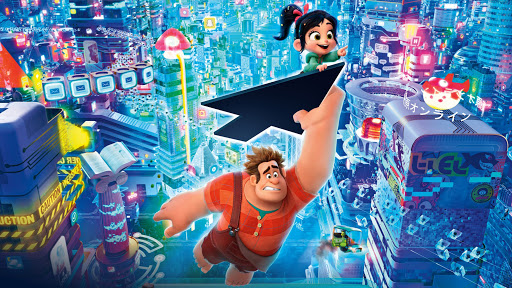

About Ralph
Ralph is a heavy-handed wrecking' riot with a heart. For 30 years --day in, day out -- he's been doing the job as "The Bad Guy." Wreck-It Ralph is tired of always being the "bad guy" and losing to his "good guy" opponent, Fix-It Felix.
Ralph and his friend.
Ralph's Characteristics
- He's got big hands
- He's treated as bad-ass
- He's trying to be a good guy
Ralph's Friends
Here is a list of Ralph's friends. Click on the links below to read more about them